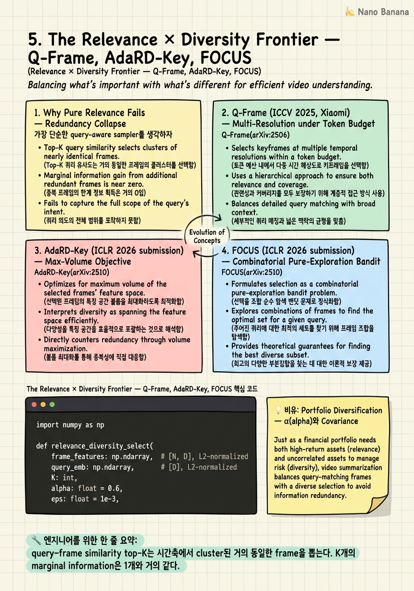

The Relevance × Diversity Frontier — Q-Frame, AdaRD-Key, FOCUS

🎯 학습 목표
- pure relevance sampler가 왜 redundant frame을 뽑는지 정량적으로 설명할 수 있다
- log-det diversity term이 Determinantal Point Process(DPP)와 어떻게 연결되는지 이해한다
- Q-Frame의 per-frame multi-resolution이 token budget 안에서 왜 효율적인지 설명할 수 있다
- AdaRD-Key의 gating 메커니즘이 weak query에서 왜 diversity-only로 fallback해야 하는지 이해한다
- FOCUS의 multi-armed bandit framing이 large frame pool + expensive evaluator 상황에 왜 맞는지 안다
- greedy submodular maximization으로 relevance × diversity selector를 직접 구현할 수 있다
- 2026년 SOTA가 수렴한 세 축(training-free / query-aware / frame×diversity)을 자신의 시스템에 매핑할 수 있다
Chapter 3-4에서 query-aware adaptive sampler(AKS, BOLT)와 learned sampler(Frame-Voyager, M-LLM, GenS)를 봤다. 이들의 공통 약점은 *pure relevance bias*다 — query–frame similarity가 높은 frame을 K개 뽑으면, 그 K개가 사실상 같은 순간(같은 shot, 같은 객체, 같은 카메라 각도)을 가리키는 경우가 압도적으로 많다. 1시간짜리 cooking video에서 'how does the chef season the steak?'라는 query를 던지면 seasoning 장면 0.5초 안의 거의 동일한 30 프레임이 top-30을 다 차지한다. 정답에 필요한 *before / during / after* 구조는 사라진다.
2025 후반부터 2026 ICLR submission 시즌까지 이 문제를 정면으로 겨냥한 세 논문이 등장했다. ICCV 2025의 Q-Frame(Xiaomi, arXiv:2506.22139)은 query-aware selection에 *per-frame multi-resolution* 축을 추가해 같은 token budget 안에서 더 많은 시간적 분산을 확보했다. ICLR 2026 submission AdaRD-Key(arXiv:2510.02778)는 Relevance × log-det Diversity의 Max-Volume objective를 명시적으로 풀고, weak query에서는 diversity-only로 자동 전환하는 gating을 도입했다. 같은 시즌의 FOCUS(arXiv:2510.27280)는 frame selection을 combinatorial pure-exploration multi-armed bandit으로 다시 정의해, Bernstein confidence bound로 20분 이상 LongVideoBench에서 frame의 2% 미만만 보면서 +11.9%를 얻었다.
이 chapter는 (1) 왜 pure relevance가 실패하는지 정량적으로 보고, (2) 세 논문을 한 줄로 묶는 mathematical lens — log-det / max-volume / bandit — 을 정리한 뒤, (3) portfolio diversification analogy로 직관을 잡고, (4) 30줄 짜리 greedy relevance × diversity selector를 직접 구현한다. 마지막으로 2026 frontier가 수렴한 세 축(training-free vs learned, query-aware vs agnostic, frame-level vs token-level)에서 우리가 어디 서 있는지 좌표를 찍는다.
핵심 내용
1. Why Pure Relevance Fails — Redundancy Collapse
가장 단순한 query-aware sampler를 생각하자. 비디오의 모든 frame을 SigLIP/CLIP으로 encoding하고, query embedding과 cosine similarity를 계산해 top-K를 뽑는다. 이게 BOLT(arXiv:2503.21483)의 inverse-transform 이전 baseline이고, naive CLIP-filter baseline이며, 실제 production에서 가장 자주 보는 패턴이다.
실패 모드는 redundancy collapse다. similarity가 높은 frame들은 시간축에서 *클러스터링*된다 — 동일 shot, 동일 객체, 미세하게 다른 카메라 각도. K=8을 뽑으면 8개가 0.5초 윈도 안에 다 들어가는 경우가 흔하다. AdaRD-Key 논문의 ablation에서 pure relevance top-K는 LongVideoBench의 다단계 질문(예: 'before X, what was Y doing?')에서 정확도가 random uniform보다 낮게 떨어진다. 시간적 *evolution*을 잡지 못하기 때문이다.
수학적으로 보면 명확하다. K개 frame의 information content는 단순 sum이 아니라 *submodular*하다. 두 번째 frame이 첫 번째와 거의 같다면 marginal gain은 0에 가깝다. pure relevance는 이 submodularity를 모델링하지 않는다. 그래서 sum(rel(f_i))만 maximize하면 marginal gain이 0인 frame을 계속 추가한다.
Chapter 3의 AKS가 prompt relevance와 *coverage*를 함께 본 이유, BOLT가 *inverse-transform*으로 weight 분포를 펼쳐서 뽑은 이유가 여기에 있다. 2025–2026의 세 frontier 논문은 같은 직관을 더 explicit한 수학으로 다시 쓴다 — coverage/spread를 diversity term으로 형식화하고, 그 term을 log-det이나 bandit exploration으로 정의한다.
2. Q-Frame (ICCV 2025, Xiaomi) — Multi-Resolution under Token Budget
Q-Frame(arXiv:2506.22139, Zhang et al., Xiaomi)은 ICCV 2025에 accept된 training-free, model-agnostic sampler다. 핵심 통찰은 두 가지다.
첫째, query-aware selection: CLIP-style scoring으로 frame–query relevance를 계산하되, naive top-K가 아니라 *relevance 분포를 따라 spread*시키는 방식으로 인덱스를 뽑는다 (BOLT의 inverse-transform과 사상은 유사하지만 Q-Frame은 그 위에 multi-resolution을 얹는 게 차별점이다).
둘째, per-frame multi-resolution under token budget: 모든 frame을 같은 해상도로 인코딩하지 않는다. relevance가 높은 frame은 고해상도(=많은 vision token)로, 낮은 frame은 저해상도(=적은 token)로 인코딩한다. 총 token budget T가 주어졌을 때, frame f_i에 해상도 r_i를 할당하는 문제를 풀면 같은 T 아래서 더 많은 frame을 cover할 수 있다.
이게 왜 diversity와 연결되는가? 동일 budget으로 더 많은 frame을 통과시킬 수 있다는 것은, *temporal coverage*가 자동으로 늘어난다는 뜻이다. high-relevance cluster에 있는 frame들은 어차피 비슷하므로 그중 하나만 고해상도로, 나머지는 저해상도로 (혹은 drop) 처리하면 budget을 outside-cluster의 일부 frame을 끌어오는 데 쓸 수 있다.
Q-Frame은 model-agnostic이다 — LLaVA-Video, Qwen2.5-VL, InternVL2.5 같은 downstream Video-LLM의 vision encoder 앞단에 그대로 끼워 넣는다. Chapter 9에서 다룰 plug-and-play interface 관점에서 보면 Sampler.select() -> (indices, resolutions) 으로 시그니처가 한 칸 늘어난 형태다.
3. AdaRD-Key (ICLR 2026 submission) — Max-Volume Objective
AdaRD-Key(arXiv:2510.02778, Xian et al.)는 ICLR 2026 submission으로, relevance × diversity를 Max-Volume objective로 명시적으로 푼다.
Objective: 선택된 frame index set S에 대해,
`
J(S) = α · Σ_{i∈S} rel(f_i, q) + (1-α) · logdet(K_S + εI)
`
여기서 K_S는 선택된 frame들의 feature Gram matrix다. logdet(K_S)는 feature space에서 그 frame들이 *얼마나 큰 volume*을 span하는지 측정한다. 동일한 frame을 두 번 넣으면 K_S는 rank-deficient가 되어 logdet은 -∞로 발산한다(ε regularizer로 막는다). 즉 redundant frame은 자동으로 penalize된다.
log-det diversity는 Determinantal Point Process(DPP)의 핵심 수학이다. DPP에서 set S가 뽑힐 확률은 det(L_S)에 비례하고, log을 취하면 log-det 형태가 된다. DPP는 추천 시스템(Netflix), summarization, mini-batch selection 등에서 'diverse but high-quality' set을 뽑을 때 표준 도구다. AdaRD-Key는 이 도구를 frame sampling에 가져왔다.
Greedy approximation: logdet은 set function으로 submodular이고, relevance sum은 modular다. 둘의 weighted sum은 여전히 submodular이므로, greedy algorithm이 (1 - 1/e) 근사를 보장한다. 즉 매 step에서 marginal gain이 가장 큰 frame을 하나씩 추가하면 된다. K=8, K=32 같은 실용적 size에서 greedy로 충분하다.
Weak-query gating: AdaRD-Key의 두 번째 contribution이다. query가 'describe the video' 같은 weak/generic query면 relevance signal이 거의 uniform하다 — 모든 frame의 rel score가 비슷하다. 이 경우 relevance term은 정보가 없으므로 α를 자동으로 0으로 만들어 diversity-only로 fallback한다. 반대로 query가 'when does the woman pick up the red mug?' 같은 strong/specific query면 α를 크게 둔다. gating은 query embedding의 entropy나 rel score 분포의 분산으로 결정된다.
result: LongVideoBench, MLVU에서 동급 frame budget의 BOLT/AKS 대비 추가 이득을 보고한다 (paper Table 2).
4. FOCUS (ICLR 2026 submission) — Combinatorial Pure-Exploration Bandit
FOCUS(arXiv:2510.27280)는 frame selection을 combinatorial pure-exploration multi-armed bandit으로 reframe한다. 같은 ICLR 2026 cycle의 submission이고, 가장 자극적인 결과 — 20분 이상 LongVideoBench에서 전체 frame의 <2%만 보면서 +11.9% — 를 보고한다.
Bandit framing: 각 frame을 'arm'으로 본다. arm을 pull한다는 것은 그 frame을 (비싼) downstream evaluator — 예를 들어 VideoLLM 자체나 captioner — 에 넣어서 reward(=query에 대한 informativeness)를 측정한다는 의미다. 한 시간 비디오에는 수만 개 frame이 있고, 모든 frame을 evaluator에 넣는 건 불가능하다. 우리가 알고 싶은 건 *top-K arm 집합* 자체(combinatorial) — 어떤 frame이 *개별적으로* best인지가 아니라 어떤 *K-tuple*이 best인지.
Pure exploration: 일반 bandit은 exploration-exploitation trade-off지만, pure exploration은 *오직 best arm/set identification*만 목표로 한다. classification: 보상을 최대화하는 게 아니라 최소 횟수의 pull로 best set을 옳게 identify하는 것.
Bernstein confidence bound: FOCUS는 Bernstein inequality 기반 confidence interval로 arm마다 estimated reward의 신뢰구간을 유지한다. 어떤 frame의 upper bound가 다른 frame의 lower bound보다 명확히 낮으면 그 frame은 즉시 제거(elimination). 남은 후보군에서 confidence가 가장 넓은 frame을 다음에 pull한다. 결과적으로 명확히 나쁜 frame은 빠르게 버려지고, 'top-K boundary' 근처의 어려운 frame에만 evaluator budget을 쓴다.
왜 이게 diversity와 연결되는가: combinatorial pure exploration은 *K-set의 joint reward*를 본다. K개를 함께 평가하므로, 서로 중복된 K-set은 joint reward가 낮게 측정된다(같은 정보 K번 = K배가 아님). 이 평가 함수 자체에 diversity가 내장되어 있다.
어디에 맞는가: (a) frame pool이 매우 클 때 (1시간+, 1 fps만 해도 3600 frame), (b) per-frame 평가가 *비쌀 때* (captioner 호출, VideoLLM 부분 inference). 이 두 조건이 둘 다 강하면 bandit의 sample-complexity gain이 압도적이다. AKS/BOLT는 CLIP 한 번에 모든 frame 점수가 나오므로 bandit이 불필요했지만, evaluator가 더 무거워지는 2026 agentic loop 시대(Chapter 9에서 다룰 FrameThinker, FrameMind)에는 bandit이 자연스럽다.
5. The Three Axes 2026 Converged On
AKS, BOLT, Frame-Voyager, M-LLM, GenS, Q-Frame, AdaRD-Key, FOCUS — 2024 말부터 2026 초까지의 SOTA sampler들을 모아두면 세 개의 직교 축이 보인다.
축 1: Training-free vs Learned - Training-free: AKS, BOLT, Q-Frame, AdaRD-Key, FOCUS — frozen CLIP/SigLIP embedding 위에서 objective만 푼다. 운영상 'pip install, 끝'. - Learned: Frame-Voyager(arXiv:2410.03226), M-LLM(arXiv:2502.19680), GenS(arXiv:2503.09146) — 별도 학습 단계 필요. supervised signal로 인해 성능 상한은 높지만, 새 domain에 가면 재학습.
축 2: Query-aware vs Agnostic - Query-aware: 위 거의 전부. - Agnostic: PySceneDetect, uniform, fps-based — query를 모름. retrieval indexing에는 적합(질의어를 미리 모름), 단일 질의 inference에는 sub-optimal.
축 3: Frame-level vs Token-level - Frame-level: 위 sampler 전부 — 'K개 frame을 고른다'가 목표. - Token-level: VideoChat-Flash(arXiv:2501.00574), NVILA(arXiv:2412.04468), FastVID(arXiv:2503.11187) — frame은 다 받되 *token*을 압축. Chapter 7에서 다룰 직교 축.
2026이 서 있는 좌표: training-free + query-aware + frame-level + relevance × diversity. Q-Frame / AdaRD-Key / FOCUS가 같은 좌표에 모인 게 우연이 아니다. 이 좌표는 (a) 어떤 downstream Video-LLM에도 swap-in 가능하고(plug-and-play), (b) query를 알 수 있는 inference time에 강하고, (c) Chapter 7의 token compression과 *직교*하므로 stack 가능하다(sampler→token compressor 순으로 쌓는다). frontier는 이 좌표를 정교화하는 방향 — gating, multi-resolution, bandit budget — 으로 움직이고 있다.
💡 비유로 이해하기
target return을 가진 stock portfolio를 짤 때 두 가지를 동시에 본다.
1. Expected return (alpha): 각 stock의 기대 수익률. 높은 게 좋다. → relevance(query, frame). 2. Covariance: 보유 stock 사이의 상관관계. 모든 stock이 같은 섹터(예: 전부 반도체)면 한 번의 시장 충격에 다 같이 무너진다. covariance가 낮은(uncorrelated) stock을 섞어야 분산이 작아진다. → frame features 사이의 redundancy.
Modern Portfolio Theory의 핵심은 그래서 *return × diversification*이지 return only가 아니다. 정확히 같은 구조가 frame sampling에 나타난다.
- '모든 자금을 alpha가 가장 높은 한 종목에 몰빵' = pure relevance top-K. cluster collapse. - 'alpha와 분산을 함께 최대화' = relevance × diversity.
log-det이 covariance와 직접 연결된다. 포트폴리오의 위험 분산도는 covariance matrix Σ의 determinant로 측정할 수 있다 — det(Σ)가 크면 자산들이 *큰 volume*을 span한다(=서로 잘 분산되어 있다). frame feature Gram matrix K_S의 log-det이 정확히 같은 양이다. AdaRD-Key의 Max-Volume objective는 'expected return α만큼은 챙기되 covariance volume도 키워라'다.
FOCUS의 bandit framing은 portfolio 비유의 다른 측면이다. 모든 종목을 일일이 분석할 수 없을 때, 분석 비용 자체를 최소화하면서 best-K portfolio를 *식별*하는 문제. quant trading의 'best arm identification' 알고리듬이 그대로 옮겨온다.
이 비유에서 빠뜨리지 말 것: α(weight)는 hyperparameter가 아니라 *query에 의존*한다. weak query = market regime이 불확실 → diversification으로 보수적 운용. strong query = high-conviction view → alpha에 더 베팅. AdaRD-Key의 gating이 이 'regime-dependent α'를 명시적으로 학습한다.
💻 코드 예시
30~40줄짜리 greedy relevance × diversity selector. AdaRD-Key의 Max-Volume objective를 단순화한 버전으로, frame feature와 query embedding이 주어지면 K개 frame을 고른다. submodular greedy로 매 step marginal gain이 가장 큰 frame을 추가한다. 실행 가능하고, NumPy만 쓴다.
import numpy as np
def relevance_diversity_select(
frame_features: np.ndarray, # [N, D], L2-normalized
query_emb: np.ndarray, # [D], L2-normalized
K: int,
alpha: float = 0.6,
eps: float = 1e-3,
) -> list[int]:
"""Greedy submodular max of: alpha * sum(rel) + (1-alpha) * logdet(K_S + eps*I).
AdaRD-Key style Max-Volume objective, simplified.
"""
N = frame_features.shape[0]
rel = frame_features @ query_emb # [N], cosine since both normalized
sim = frame_features @ frame_features.T # [N, N] Gram matrix (kernel)
selected: list[int] = []
remaining = set(range(N))
for _ in range(min(K, N)):
best_idx, best_gain = -1, -np.inf
if selected:
K_S = sim[np.ix_(selected, selected)] + eps * np.eye(len(selected))
sign, cur_logdet = np.linalg.slogdet(K_S)
cur_logdet = cur_logdet if sign > 0 else -np.inf
else:
cur_logdet = 0.0
for i in remaining:
cand = selected + [i]
K_C = sim[np.ix_(cand, cand)] + eps * np.eye(len(cand))
sign, new_logdet = np.linalg.slogdet(K_C)
if sign <= 0:
continue
div_gain = new_logdet - cur_logdet
gain = alpha * rel[i] + (1.0 - alpha) * div_gain
if gain > best_gain:
best_gain, best_idx = gain, i
if best_idx < 0:
break
selected.append(best_idx)
remaining.remove(best_idx)
return sorted(selected)
if __name__ == "__main__":
rng = np.random.default_rng(0)
D, N = 64, 200
# synthetic: 3 clusters of frames, the first cluster aligns with the query.
centers = rng.standard_normal((3, D))
feats = np.vstack([c + 0.1 * rng.standard_normal((N // 3, D)) for c in centers])
feats /= np.linalg.norm(feats, axis=1, keepdims=True)
query = centers[0] / np.linalg.norm(centers[0])
pure_relevance = np.argsort(-(feats @ query))[:8].tolist()
rel_div = relevance_diversity_select(feats, query, K=8, alpha=0.6)
print("pure relevance top-8 cluster ids:", [i // (N // 3) for i in pure_relevance])
print("relevance x diversity cluster ids:", [i // (N // 3) for i in rel_div])frame_features는 SigLIP/CLIP으로 인코딩된 L2-normalized frame embedding이라고 가정한다. rel = features @ query는 cosine relevance가 된다. sim은 모든 frame 쌍의 Gram matrix이고 log-det diversity의 입력이다.
greedy loop은 매 step에서 (a) 현재 선택된 set의 log-det을 한 번 계산하고, (b) 후보 frame i를 추가했을 때 log-det 증가분 div_gain을 구하고, (c) alpha * rel[i] + (1-alpha) * div_gain의 marginal gain이 최대인 frame을 고른다. submodular function의 standard greedy로 (1 - 1/e) 근사를 보장한다.
eps * I는 K_S가 rank-deficient(중복 frame)일 때 log-det이 -∞로 가는 걸 막는 regularizer다. 실전에서는 eps를 1e-3 ~ 1e-2 범위로 두고, frame feature가 normalized라는 가정 하에서 안정적이다.
__main__ 데모는 3개 cluster의 synthetic frame을 만들고 cluster 0이 query와 align되도록 설계한다. pure relevance top-8은 거의 전부 cluster 0을 뽑는다 — redundancy collapse. relevance × diversity는 cluster 0을 다수 뽑되 cluster 1, 2에서도 몇 개를 끌어온다. 실제 비디오에서 cluster 1, 2가 'before'와 'after' frame이라면 정답을 위한 temporal context를 확보한 셈이다.
프로덕션 코드에서 바꿀 점: (1) Cholesky rank-1 update로 매 step O(N·k) 대신 O(N·k²)을 O(N·k)로 낮춘다. (2) eps와 alpha를 AdaRD-Key의 gating으로 query-dependent하게 만든다 — rel 분포의 분산이 작으면 alpha→0(diversity-only). (3) frame feature는 frame-level 평균 대신 multi-token average pool을 쓰면 더 잘 동작한다.
🏭 현업에서의 평가
✅ 시니어가 보는 것
- pure relevance가 cluster collapse한다는 사실을 *실제 데이터*로 본 경험
- log-det diversity와 DPP의 관계, 그리고 그게 portfolio covariance와 같은 수학적 구조라는 걸 직관적으로 설명할 수 있는가
- submodular function의 greedy (1 - 1/e) 보장이 어디서 오는지 한 줄로 설명할 수 있는가 (Nemhauser-Wolsey-Fisher)
- weak query 상황에서 relevance term을 *낮춰야* 한다는 gating 직관
- bandit framing이 항상 필요한 게 아니라 (a) 큰 pool + (b) 비싼 per-frame evaluator의 두 조건이 *동시에* 성립할 때 정당화된다는 비용 분석
- training-free / query-aware / frame-level이라는 2026의 좌표를 자기 시스템의 좌표와 비교하고 gap을 식별할 수 있는가
- Q-Frame의 multi-resolution이 token budget이라는 *제약*에서 자연스럽게 도출되는 결과이며, budget 무제한이면 의미가 없다는 점을 이해하는가
⚠️ 레드 플래그
- 'diversity는 그냥 frame을 골고루 뽑는 거 아니에요?' — uniform sampling과 log-det max-volume의 차이를 모름
- logdet이 -∞로 발산하는 numerical 문제와 그 해결책(eps regularizer)을 모른 채 '논문대로 구현했어요'라고 함
- DPP를 들어본 적 없거나 '추천에서만 쓰는 것 같던데요'라고 함
- weak query gating을 듣고 'query를 prompt engineering으로 강하게 만들면 되지 않나요?'라고 답함
- bandit이 *모든* video sampling 문제에 좋다고 말함
- Q-Frame과 AdaRD-Key가 '같은 거 아니냐'고 말함
- 'training-free라서 SOTA 못 깬다'는 편견
🎤 예상 인터뷰 질문
- Q1. 1시간짜리 cooking video에서 'how does the chef season the steak?'라는 query로 K=16 frame을 뽑아야 한다. naive CLIP top-16이 실패하는 모드를 정확히 묘사하고, AdaRD-Key의 Max-Volume objective가 *왜* 그 실패를 정량적으로 고치는지 설명하라. log-det이 0(혹은 -∞)에 가까워질 때 일어나는 일을 수식 수준에서 답하라.
- Q2. 당신의 production 시스템은 frame당 GPT-4V caption을 호출하고 그 caption으로 frame을 평가한다(API 호출 비용 $0.01/frame). 비디오는 평균 2시간, 1 fps 추출 시 7,200 frame이다. K=32를 골라야 한다. (a) AdaRD-Key(CLIP 기반 log-det) vs FOCUS(bandit-pure-exploration) 중 어느 쪽이 *비용* 관점에서 정당한지, (b) Bernstein bound 기반 elimination이 평균 몇 회의 GPT-4V 호출 안에서 끝날지 sample complexity의 order를 sketch하라.
- Q3. Q-Frame의 per-frame multi-resolution과 Chapter 7에서 다룰 VideoChat-Flash의 token-level HiCo compression은 둘 다 'token budget을 줄인다'는 점에서 닮아 보인다. 두 접근이 stack 가능한지(같은 pipeline에 둘 다 넣어도 되는지), 어느 순서로 두어야 하는지, 그리고 *trade-off가 충돌하는* 구체적 시나리오 하나를 들어라.
✨ 핵심 요약
Pure relevance는 redundancy collapse한다
query–frame similarity top-K는 시간축에서 cluster된 거의 동일한 frame을 뽑는다. K개의 marginal information은 1개와 거의 같다.
log-det diversity는 DPP/portfolio covariance와 같은 수학
AdaRD-Key의 Max-Volume objective `α·sum(rel) + (1-α)·logdet(K_S + εI)`는 Determinantal Point Process의 핵심 수학과 동일하다.
Greedy submodular는 (1-1/e) 보장
relevance + log-det weighted sum은 submodular다. greedy는 OPT의 (1-1/e)≈0.632까지 보장한다.
Q-Frame은 token budget을 multi-resolution으로 해체한다
같은 token budget T 아래서 high-relevance frame은 고해상도, low는 저해상도로 인코딩. 결과적으로 더 많은 frame을 cover해 temporal diversity가 부수효과로 늘어난다(arXiv:2506.22139).
AdaRD-Key의 gating: weak query에서는 diversity-only
query가 generic하면 relevance signal이 거의 uniform이고 정보가 없다. 이때 α=0으로 자동 전환해 log-det만 maximize → 사실상 DPP sampling(arXiv:2510.02778).
FOCUS의 bandit은 large pool + expensive evaluator일 때만 정당화
combinatorial pure-exploration bandit + Bernstein bound는 frame pool이 수천~수만이고 per-frame 평가가 비쌀 때 비로소 ROI가 양수다. 20분+ LongVideoBench에서 frame의 <2%로 +11.9% 결과는 이 두 조건이 충족된 케이스다(arXiv:2510.27280).
2026 frontier는 한 좌표로 수렴했다
training-free + query-aware + frame-level + relevance × diversity. Q-Frame, AdaRD-Key, FOCUS가 같은 좌표에 모인 건 우연이 아니다.
Diversity term은 hyperparameter가 아니라 query-dependent
α를 fixed 0.5로 두는 건 baseline이고, 실제 frontier는 α를 query embedding entropy 혹은 rel 분포 분산으로 동적으로 정한다.